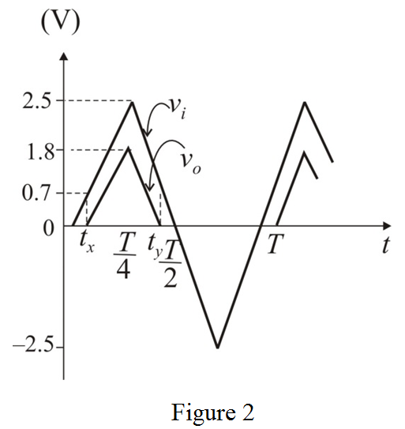
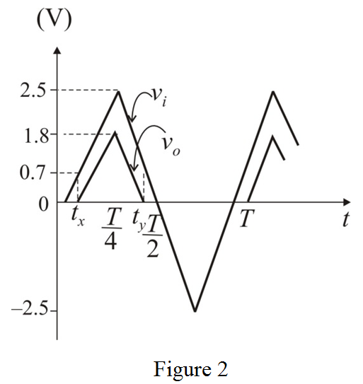

In diode ON condition voltage drop across the diode is .
Thus, the diode is ON mode when the input voltage is .
Output voltage is available when and for output voltage is zero.
and for output voltage is zero.
Draw the input-output triangular waveform.

Refer to Figure 4.21 (a) in the textbook.
Draw the modified circuit with notations.
In diode ON condition voltage drop across the diode is .
Thus, the diode is ON mode when the input voltage is .
Output voltage is available whenand for output voltage is zero.
Draw the input-output triangular waveform.

Apply Kirchhoff’s voltage law in the circuit.
Thus, the output voltage is equal to the 0.7 V less than to the input voltage.
From the input-output waveform in Figure 2,
From the input-output waveform in Figure 2,
Calculate the output average voltage,  .
.
Thus, the average output voltage of the circuit,  is .
is .